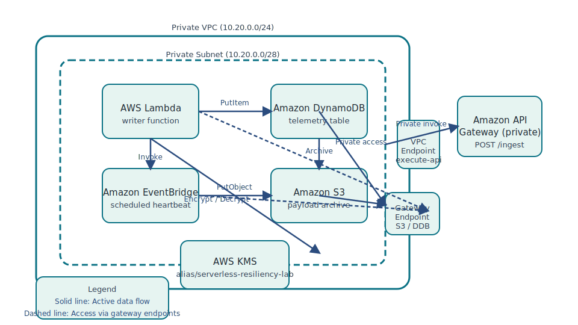

You are needed to restore a private, serverless telemetry ingestion
workload within an enterprise sandbox. The stack ships with ten
misconfigurations that block end-to-end success. Your mission is to
locate and correct each issue using only the pre-provisioned lab IAM
role.
Prerequisites:
AWS CLI v2.x (mainstream release), Python 3, the zip utility, and
permission to operate as the fixed lab IAM role (default
LabRole).
Scenario Overview
A field engineering team depends on a private ingestion API that accepts
JSON sensor payloads, stores them in DynamoDB, and keeps a durable copy
on Amazon S3. The platform must run entirely inside a managed VPC, use a
customer-managed KMS key, and expose the API privately through API
Gateway. Observability relies on an EventBridge heartbeat that pings the
Lambda writer function every 10 minutes.
The environment you received was generated automatically with deliberate
drift that mirrors common production mistakes. Your task is to audit the
stack, close the gaps, and prove the workload is operating securely and
privately.
Reference Architecture
The restored topology keeps the entire ingest path private, serverless,
and event-driven. The image below highlights the relationships between
components at a glance.

Figure 1 — Expected architecture after restoring the ingest
pipeline.
Use the diagram as a guide, then validate that each connection aligns
with the policies enforced by your lab environment.
Investigation Themes
Expect to uncover drift across four domains. Inspect each area and bring
it back in line with your organization’s standards:
Data Protection: Confirm encryption grants,
server-side defaults, and tagging conventions reflect the customer
managed key strategy.
Resilience: Review database recovery options and
scheduled health probes for coverage gaps.
Private Connectivity: Ensure the VPC has the expected
endpoints and routable paths for storage, database, and API access.
Application Configuration: Inspect runtime variables,
IAM permissions, and integrations so the Lambda writer operates
reliably.
Mission Playbook
Orientation:
Confirm the AWS CLI session is assuming the correct account and role.
Review the state manifest at
state/serverless-lab-state.json to understand which
resources were provisioned.
Data Controls:
Start with encryption posture, key usage, and tagging so the platform
meets policy requirements.
Network Paths:
Verify that private components resolve and communicate without
traversing public routes.
Runtime Integrity:
Review the Lambda configuration and downstream integrations to ensure
telemetry records reach both storage layers.
Availability Signals:
Restore automated tests or heartbeats that prove the ingest pipeline is
active.
Access Boundaries:
Constrain API Gateway invocation to the intended VPC interface
endpoint.
Proof of Completion:
Demonstrate that the Lambda writer stores payloads in DynamoDB and S3
while the API remains private.
Cost & Teardown
The entire footprint uses on-demand, serverless resources. With no
sustained traffic, the cost remains under USD $5 for the lab duration.
Scheduled EventBridge invocations occur every 10 minutes (18 calls per
3-hour session), well within the free tier.
DynamoDB operates in on-demand mode; the empty table accrues negligible
charges.
CloudShell or the supervising lab orchestrator will clean up resources
automatically after expiry. Optionally delete manually via the state
identifiers if immediate teardown is required.
Troubleshooting Tips
Keep the state file handy. It contains every resource identifier needed
for fixes (VPC IDs, endpoint IDs, etc.).
Use aws sts get-caller-identity to confirm the active lab
role before making changes.
When editing JSON policies, prefer aws ... --cli-input-json
or pipelines into python3 to avoid quoting errors.
After each adjustment, validate with targeted AWS CLI reads (for
example, describing encryption settings, endpoint attachments, or
scheduled rules) to confirm the correction worked as expected.